高级智能体设计 I：成本与性能
在整个任务维度上分配模型、推理、上下文、协作与推理服务资源，打造高性价比的智能体。
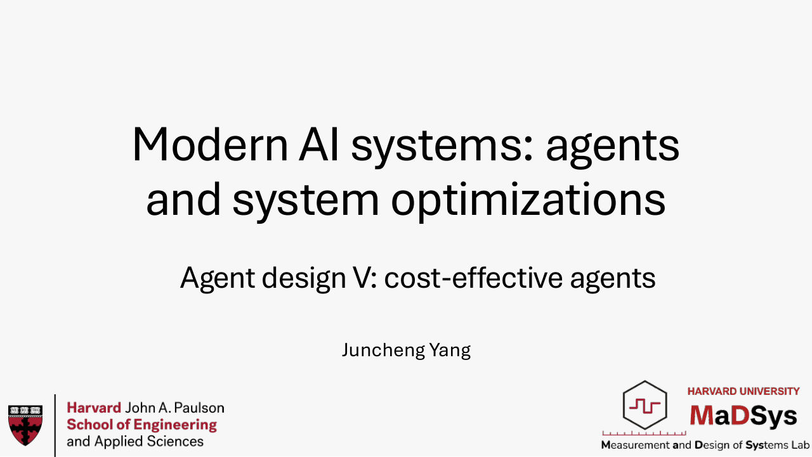
现代 AI 系统：智能体与系统优化
Juncheng Yang
智能体设计 V：高性价比的智能体
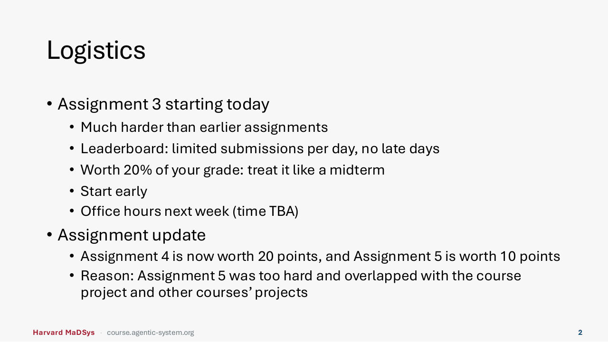
事务安排
- 作业 3 今天开始
- 比之前的作业难得多
- 排行榜：每天提交次数有限，不能用迟交日
- 占总成绩 20%：把它当成期中考试
- 尽早开始
- 下周有答疑（时间待定）
- 作业调整
- 作业 4 现在占 20 分，作业 5 占 10 分
- 原因：作业 5 太难，而且与课程项目及其他课程的项目重叠
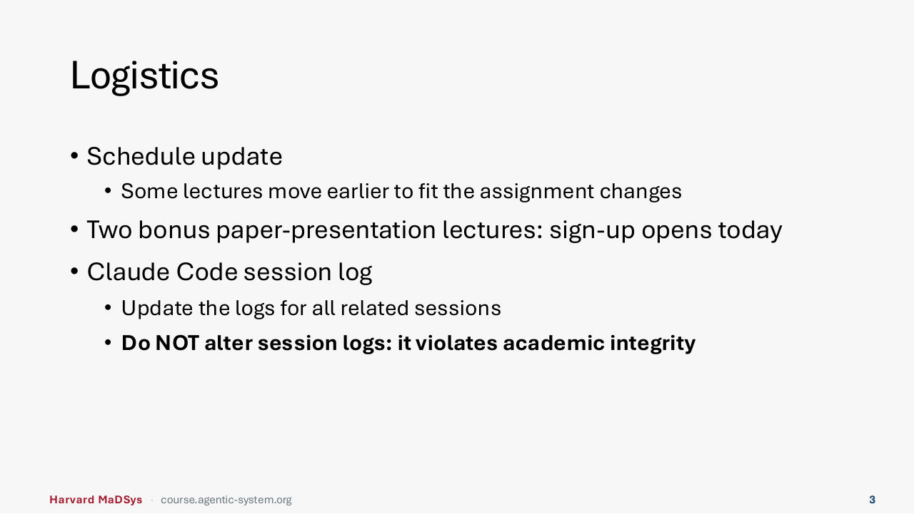
事务安排
- 课表调整
- 部分课程提前，以配合作业调整
- 两次加分的论文展示课：今天开放报名
- Claude Code 会话日志
- 更新所有相关会话的日志
- 不要篡改会话日志：这违反学术诚信
今天的安排
- 高性价比的智能体
- 智能体架构
- 编程智能体案例研究
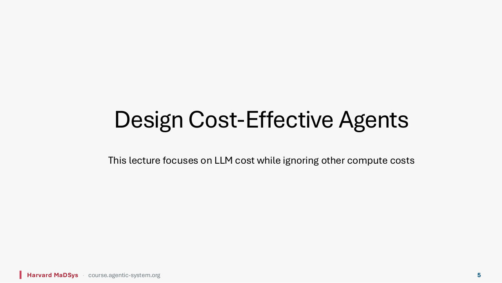
设计高性价比的智能体
本讲聚焦 LLM 成本，暂不考虑其他计算成本。
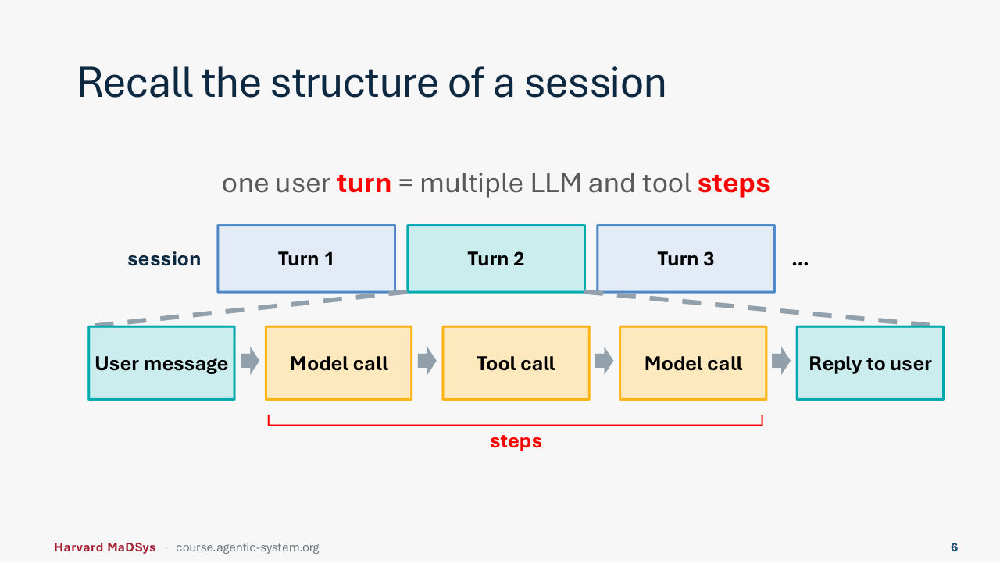
回顾一个会话的结构
会话 → 轮次 1、轮次 2、轮次 3……
每一轮：用户消息 → 模型调用 → 工具调用 → 模型调用 → 回复用户
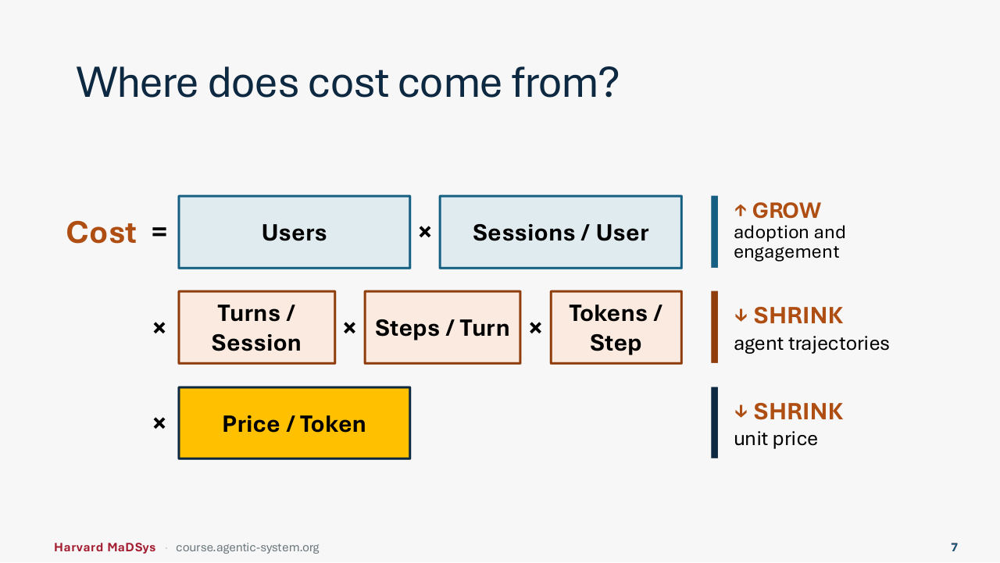
成本从哪里来？
- ↑ 增长：用户数、会话数——采用度与参与度
- ↓ 压缩：轮次、步数、token——智能体轨迹
- ↓ 压缩：单价
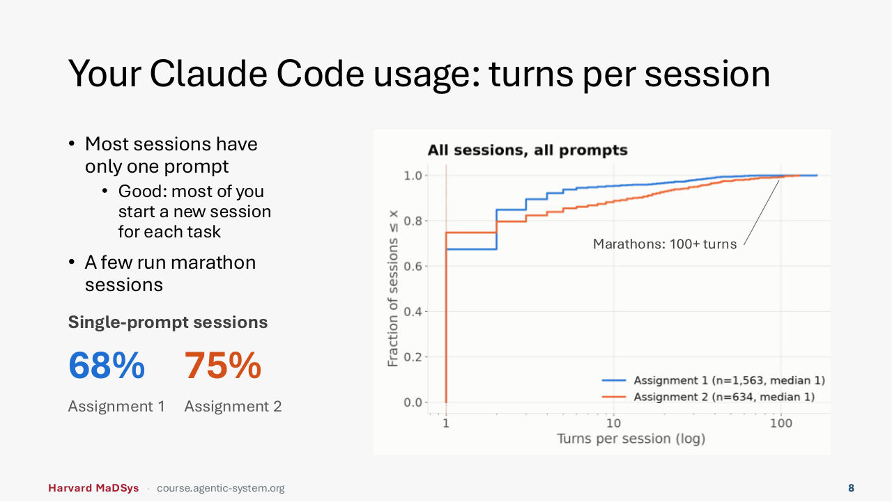
你们的 Claude Code 使用情况：每会话轮次数
- 大多数会话只有一条提示词
- 很好：大多数同学每个任务都开一个新会话
- 少数人跑“马拉松”会话
- 单提示词会话占比：作业 1 为 68%，作业 2 为 75%
- 马拉松：100 轮以上
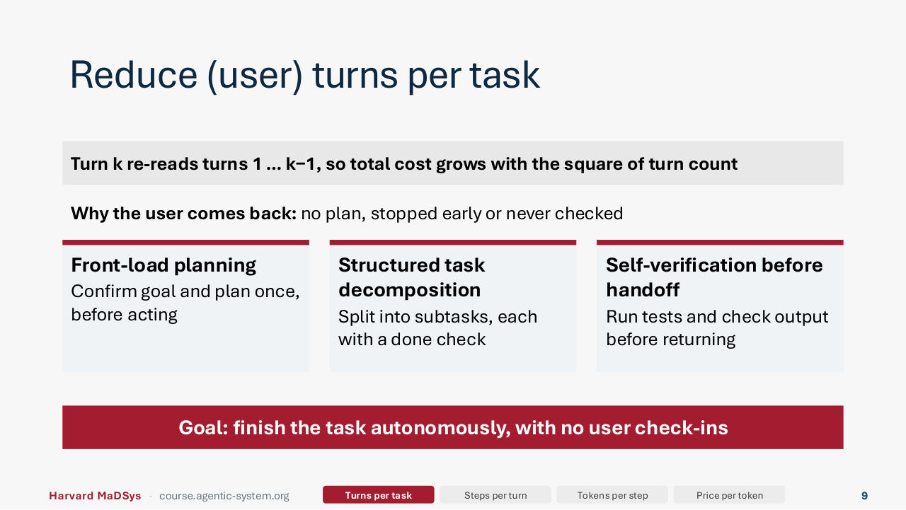
减少每个任务的（用户）轮次
第 k 轮要重读第 1 … k−1 轮，所以总成本随轮次数的平方增长。
用户为什么会回来：没有计划、过早停止，或者从没检查过。
- 前置规划：行动前一次性确认目标和计划
- 结构化任务分解：拆成子任务，每个都有完成检查
- 交付前自我验证：返回前先跑测试、检查输出
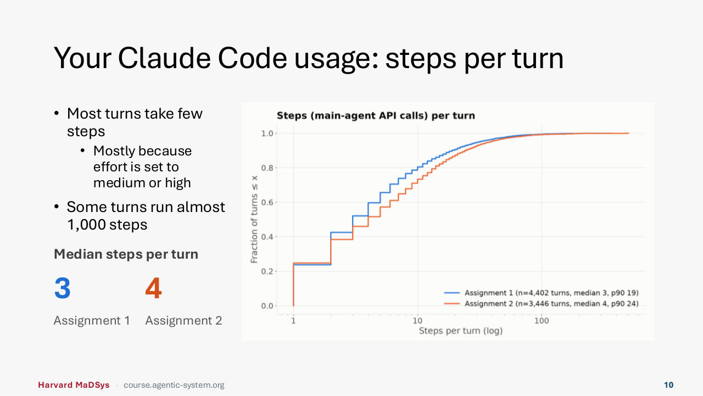
你们的 Claude Code 使用情况：每轮步数
- 大多数轮次只需要几步
- 主要因为 effort 设置为 medium 或 high
- 有些轮次跑了将近 1,000 步
（图：作业 1 与作业 2 的每轮步数中位数分布）
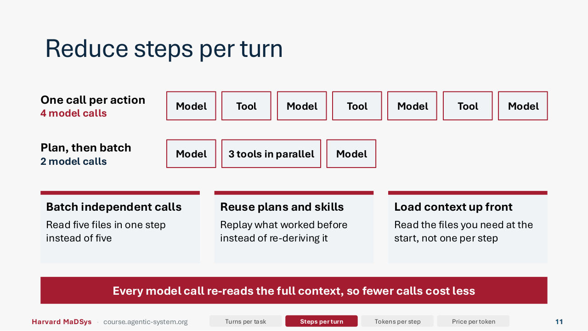
减少每轮的步数
- 每个动作一次调用：4 次模型调用（模型 → 工具 → 模型 → 工具 → 模型 → 工具 → 模型）
- 先规划，再批量：2 次模型调用（模型 → 3 个工具并行 → 模型）
做法
- 批量处理独立调用：一步读五个文件，而不是分五步
- 复用计划和 Skill：重放以前有效的做法，而不是重新推导
- 预先加载上下文：在开始时就读入需要的文件，而不是每步读一个
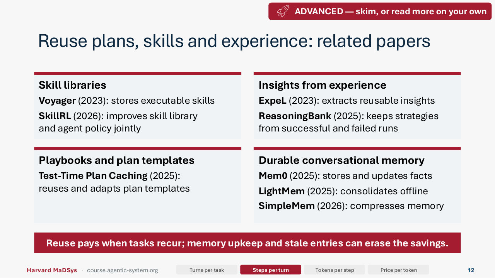
复用计划、Skill 和经验：相关论文
- Skill 库：Voyager（2023）存储可执行的技能；SkillRL（2026）联合改进技能库与智能体策略
- 从经验中提炼洞察：ExpeL（2023）提取可复用的洞察；ReasoningBank（2025）保留成功和失败运行中的策略
- 剧本与计划模板：Test-Time Plan Caching（2025）复用并调整计划模板
- 持久的对话记忆：Mem0（2025）存储和更新事实；LightMem（2025）离线整合；SimpleMem（2026）压缩记忆
ADVANCED——略读，或自行深入
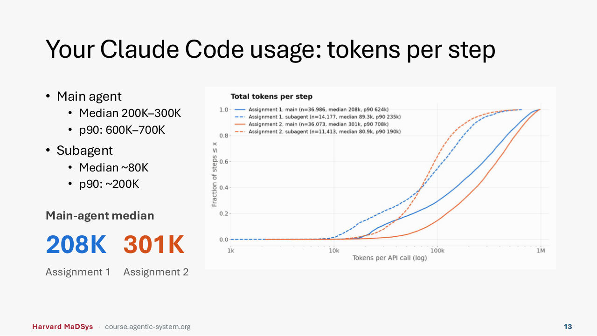
你们的 Claude Code 使用情况：每步 token 数
- 主智能体：中位数 20 万–30 万；p90：60 万–70 万
- 子智能体：中位数约 8 万；p90：约 20 万
- 主智能体中位数：作业 1 为 208K，作业 2 为 301K
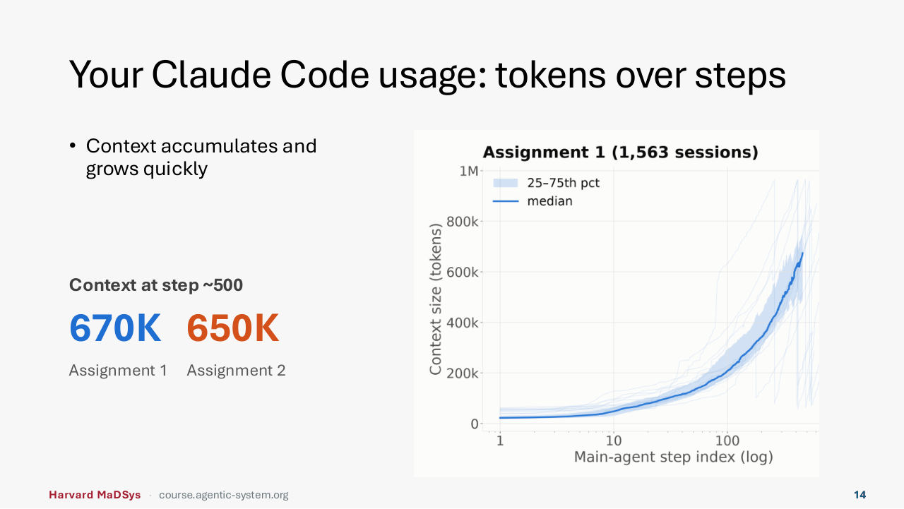
你们的 Claude Code 使用情况：token 随步数变化
- 上下文不断累积，增长很快
- 第 ~500 步时的上下文：作业 1 为 670K，作业 2 为 650K
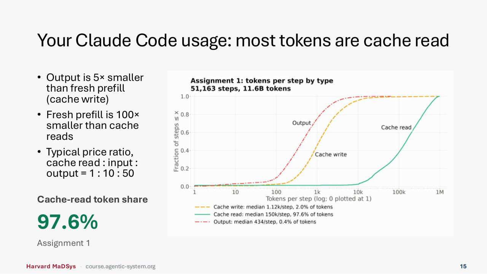
你们的 Claude Code 使用情况：大部分 token 是缓存读取
- 输出比新的预填充（缓存写入）小 5 倍
- 新的预填充比缓存读取小 100 倍
- 典型价格比：缓存读取 : 输入 : 输出 = 1 : 10 : 50
- 缓存读取 token 占比：作业 1 为 97.6%
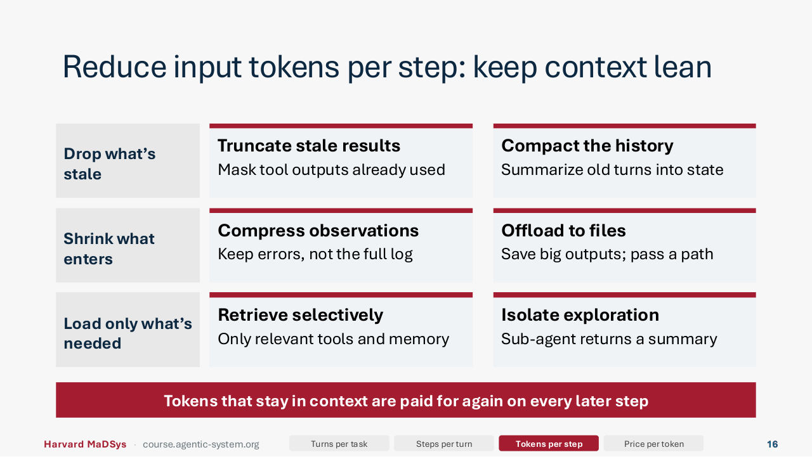
减少每步的输入 token：保持上下文精简
丢掉过时的
- 截断过时结果：遮蔽已经用过的工具输出
- 压缩历史：把旧轮次总结成状态
缩小进入的
- 压缩观察：保留错误，而不是完整日志
- 卸载到文件：保存大输出，只传路径
只加载需要的
- 有选择地检索：只取相关的工具和记忆
- 隔离探索：子智能体只返回摘要
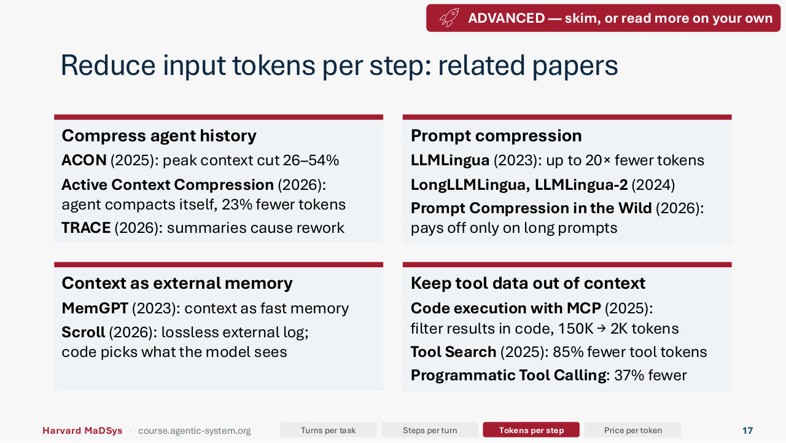
减少每步的输入 token：相关论文
- 压缩智能体历史：ACON（2025）峰值上下文减少 26–54%；Active Context Compression（2026）智能体自我压缩，token 减少 23%；TRACE（2026）指出摘要会导致返工
- 把上下文当作外部记忆：MemGPT（2023）把上下文视为快速内存；Scroll（2026）无损的外部日志，由代码挑选模型能看到什么
- 提示词压缩：LLMLingua（2023）token 最多减少 20 倍；LongLLMLingua、LLMLingua-2（2024）；Prompt Compression in the Wild（2026）只在长提示词上才划算
- 让工具数据不进上下文：Code execution with MCP（2025）在代码中过滤结果，150K → 2K token；Tool Search（2025）工具 token 减少 85%；Programmatic Tool Calling 减少 37%
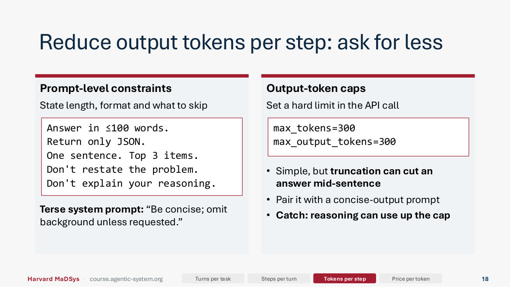
减少每步的输出 token：少要一点
提示词层面的约束：说明长度、格式以及要省略什么
Answer in ≤100 words.
Return only JSON.
One sentence. Top 3 items.
Don't restate the problem.
Don't explain your reasoning.简洁的系统提示词：“Be concise; omit background unless requested.”
输出 token 上限：在 API 调用中设置硬上限，如 max_tokens=300、max_output_tokens=300
- 简单，但截断可能把答案切在半句话
- 与“简洁输出”的提示词配合使用
- 陷阱：推理过程可能把上限耗光
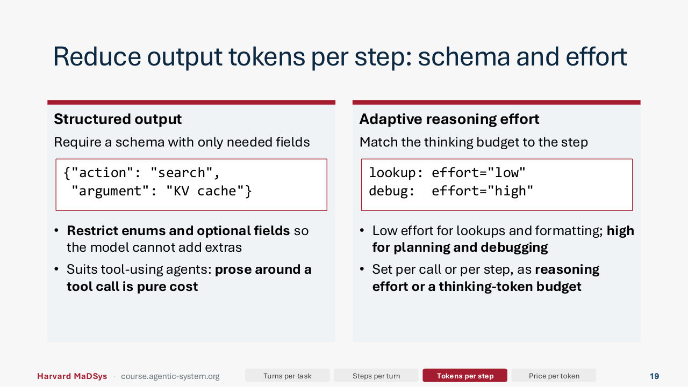
减少每步的输出 token：schema 与 effort
结构化输出：要求一个只含必要字段的 schema
{"action": "search",
"argument": "KV cache"}- 限制枚举值和可选字段，让模型无法添加多余内容
- 适合使用工具的智能体：工具调用周围的文字纯属成本
自适应推理强度：让思考预算与步骤相匹配
lookup: effort="low"
debug: effort="high"- 查找和格式化用低 effort；规划和调试用高 effort
- 按调用或按步设置，形式可以是 reasoning effort 或思考 token 预算
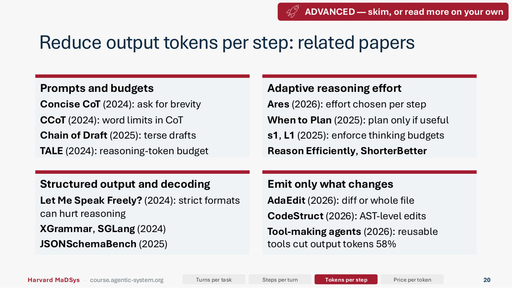
减少每步的输出 token：相关论文
- 提示词与预算：Concise CoT（2024）要求简洁；CCoT（2024）在思维链中限制字数；Chain of Draft（2025）简短草稿；TALE（2024）推理 token 预算
- 自适应推理强度：Ares（2026）按步选择 effort；When to Plan（2025）只在有用时规划；s1、L1（2025）强制思考预算；Reason Efficiently、ShorterBetter
- 结构化输出与解码：Let Me Speak Freely?（2024）严格格式可能损害推理；XGrammar、SGLang（2024）；JSONSchemaBench（2025）
- 只输出变化的部分：AdaEdit（2026）在 diff 与整文件之间选择；CodeStruct（2026）AST 级编辑；造工具的智能体（2026）可复用工具让输出 token 减少 58%
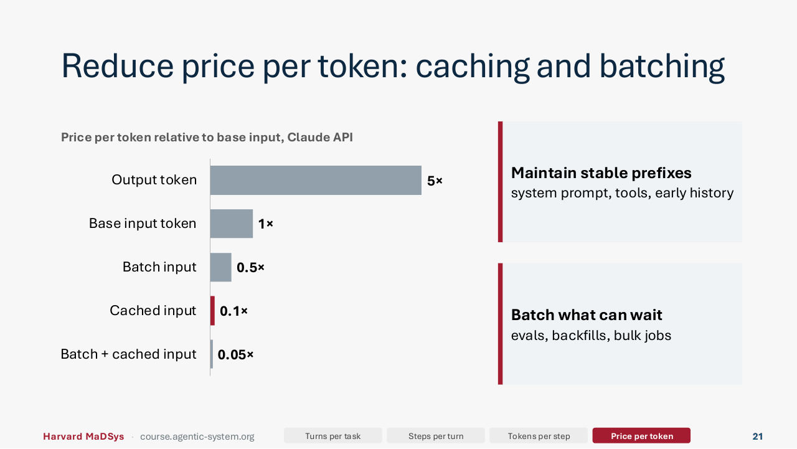
降低每 token 价格：缓存与批处理
Claude API 中相对基础输入的每 token 价格：
- 批处理 + 缓存输入：0.05×
- 缓存输入：0.1×
- 批处理输入：0.5×
- 基础输入 token：1×
- 输出 token：5×
做法
- 保持前缀稳定：系统提示词、工具、早期历史
- 能等的就批处理：评测、回填、批量任务
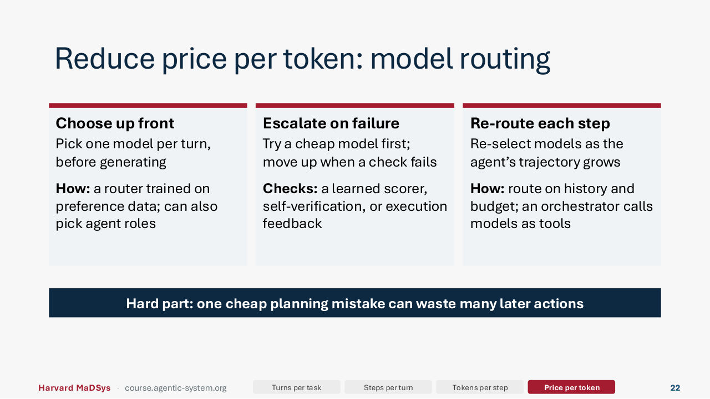
降低每 token 价格：模型路由
- 预先选择：在生成之前为每一轮选一个模型。方法：用偏好数据训练的路由器；还可以挑选智能体角色
- 失败时升级：先试便宜模型；检查不通过时换更大的。检查方式：学习得到的评分器、自我验证或执行反馈
- 每步重新路由：随着智能体轨迹增长重新选择模型。方法：根据历史和预算路由；由编排者把模型当作工具来调用
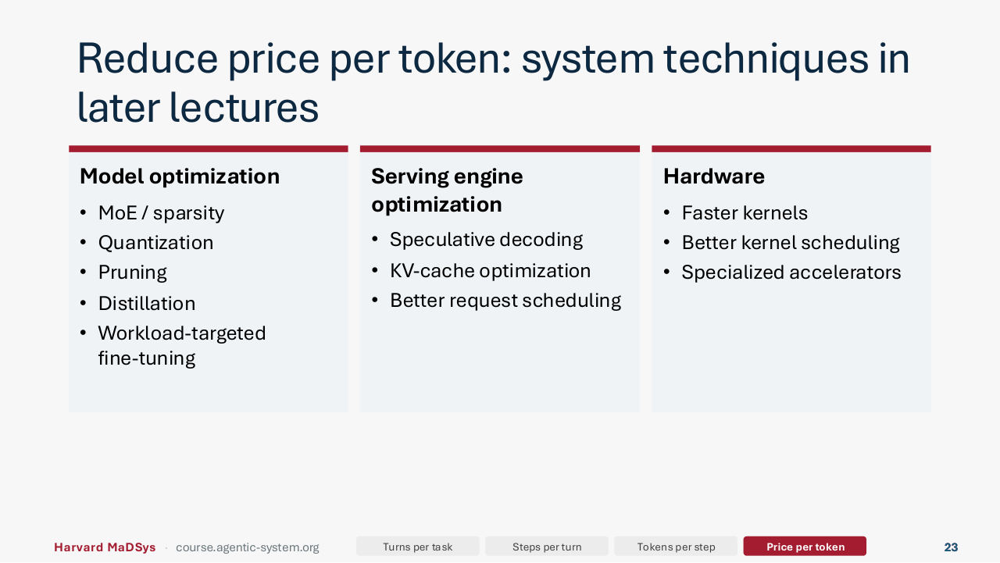
降低每 token 价格：后续课程中的系统技术
模型优化
- MoE / 稀疏化
- 量化
- 剪枝
- 蒸馏
- 面向特定负载的微调
推理引擎优化
- 推测解码
- KV-cache 优化
- 更好的请求调度
硬件
- 更快的 kernel
- 更好的 kernel 调度
- 专用加速器
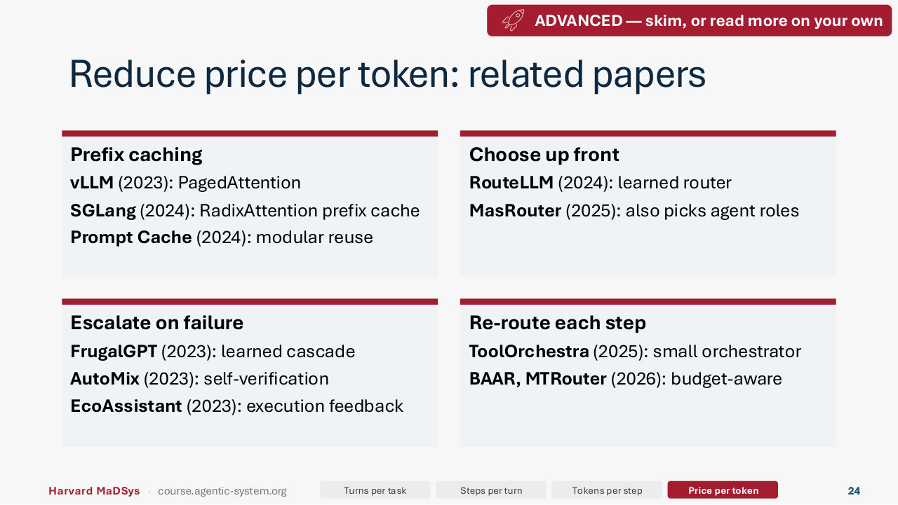
降低每 token 价格：相关论文
- 前缀缓存：vLLM（2023）PagedAttention；SGLang（2024）RadixAttention 前缀缓存；Prompt Cache（2024）模块化复用
- 预先选择：RouteLLM（2024）学习得到的路由器；MasRouter（2025）同时挑选智能体角色
- 失败时升级：FrugalGPT（2023）学习得到的级联；AutoMix（2023）自我验证；EcoAssistant（2023）执行反馈
- 每步重新路由：ToolOrchestra（2025）小型编排者；BAAR、MTRouter（2026）预算感知
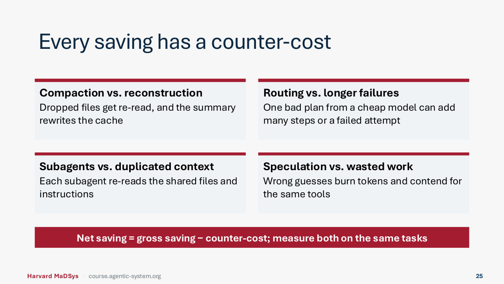
每一项节省都有反向成本
- 压缩 vs 重建：被丢掉的文件会被重新读取，而摘要会重写缓存
- 路由 vs 更长的失败：便宜模型的一个坏计划，可能增加许多步骤或导致一次失败的尝试
- 子智能体 vs 重复的上下文：每个子智能体都要重读共享文件和指令
- 推测 vs 白费的工作：猜错会烧 token，还会争抢同一批工具
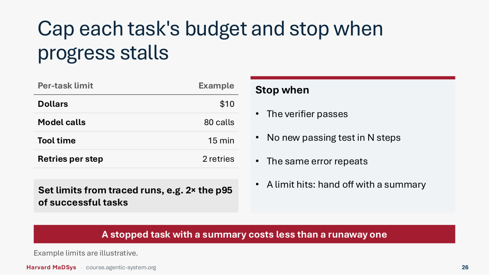
给每个任务设预算，进展停滞就停下
| 每任务上限 | 示例 |
|---|---|
| 金额 | $10 |
| 模型调用 | 80 次 |
| 工具耗时 | 15 分钟 |
| 每步重试 | 2 次 |
根据实际运行轨迹设定上限，例如成功任务 p95 的 2 倍。
停止条件
- 验证器通过
- N 步内没有新通过的测试
- 同一个错误反复出现
- 触及某个上限：附上摘要后交回
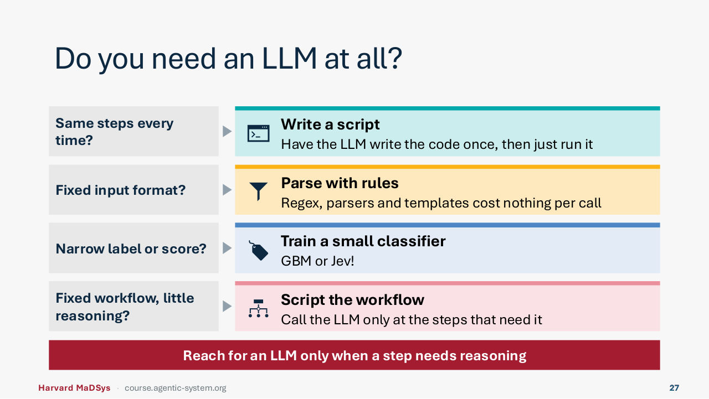
你真的需要 LLM 吗？
- 每次步骤都一样？ → 写个脚本：让 LLM 写一次代码，之后直接运行
- 输入格式固定？ → 用规则解析：正则、解析器和模板每次调用成本为零
- 只是窄范围的标签或打分？ → 训练一个小分类器：GBM 等
- 工作流固定、几乎不需要推理？ → 把工作流脚本化：只在需要的步骤调用 LLM
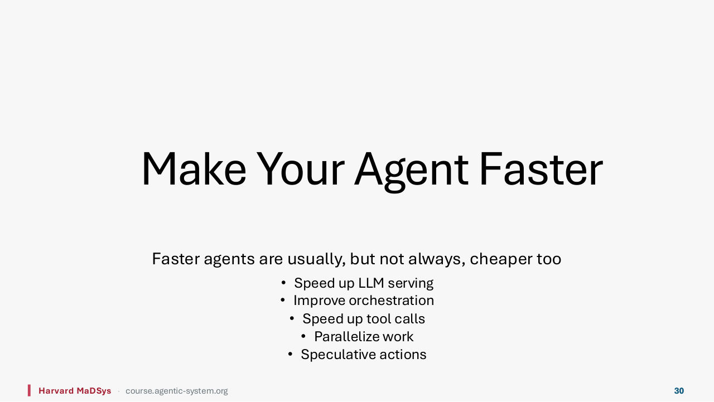
让你的智能体更快
更快的智能体通常（但不总是）也更便宜
- 加速 LLM 推理服务
- 改进编排
- 加速工具调用
- 并行化工作
- 推测式动作
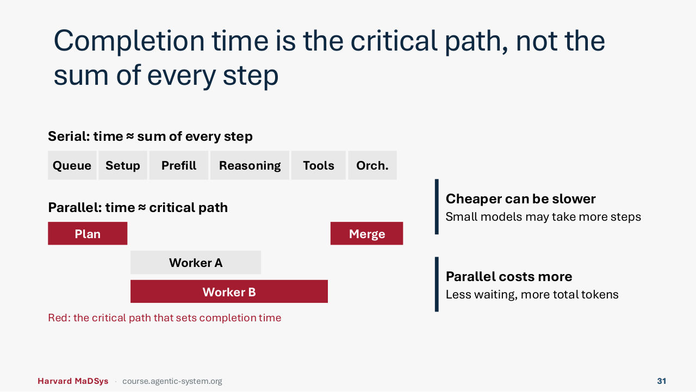
完成时间取决于关键路径，而不是所有步骤之和
- 串行：时间 ≈ 每一步之和（排队、准备、预填充、推理、工具、编排）
- 并行：时间 ≈ 关键路径（规划 → 工人 A / 工人 B → 合并），红色为决定完成时间的关键路径
- 更便宜可能更慢：小模型可能需要更多步骤
- 并行更贵：等待更少，但总 token 更多
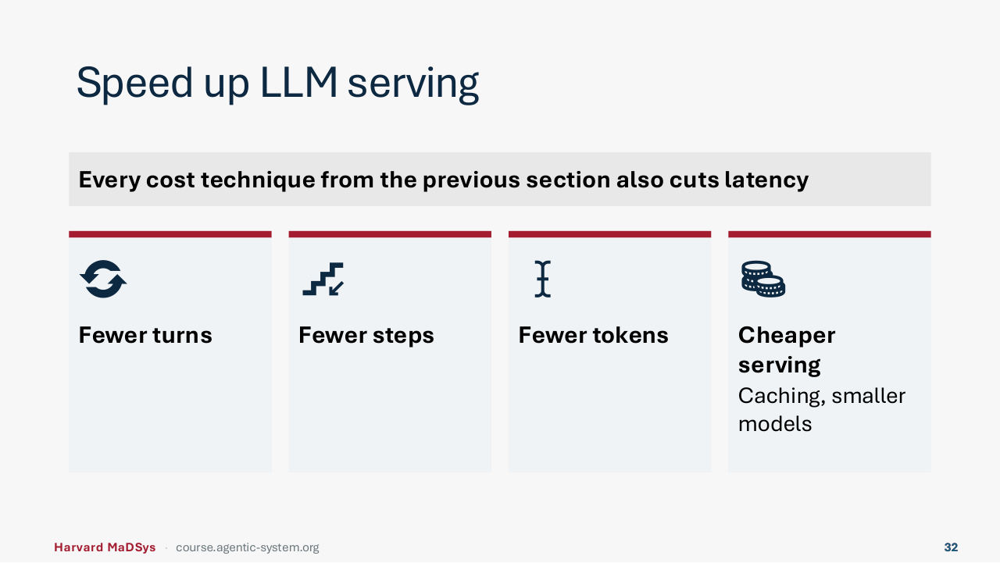
加速 LLM 推理服务
上一部分所有降成本的技术，同样能降低延迟：
- 更少的轮次
- 更少的步骤
- 更少的 token
- 更便宜的推理服务：缓存、更小的模型
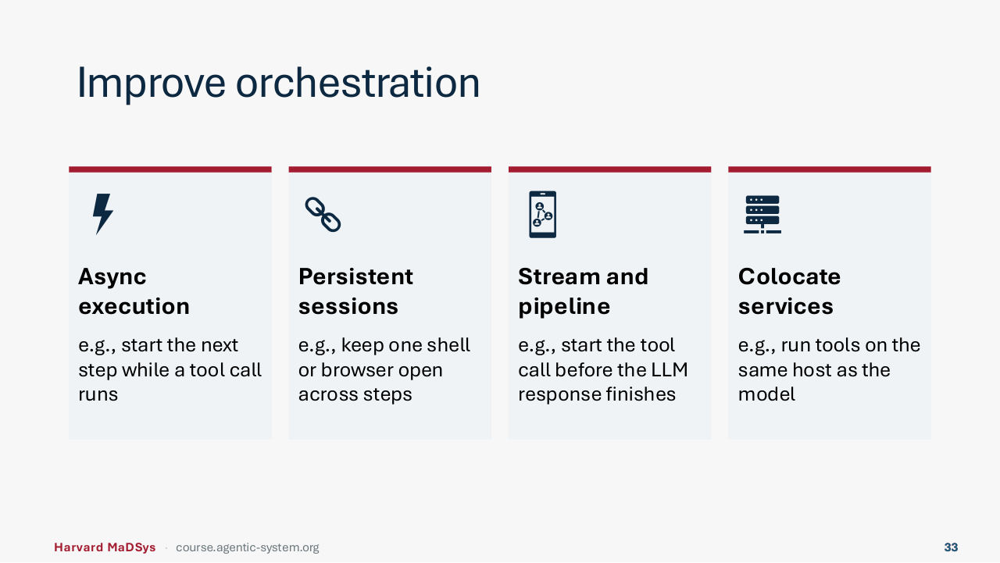
改进编排
- 异步执行：例如在工具调用运行时就开始下一步
- 持久会话：例如在多个步骤之间保持同一个 shell 或浏览器打开
- 流式与流水线：例如在 LLM 回复结束之前就启动工具调用
- 服务同址部署：例如让工具和模型运行在同一台主机上
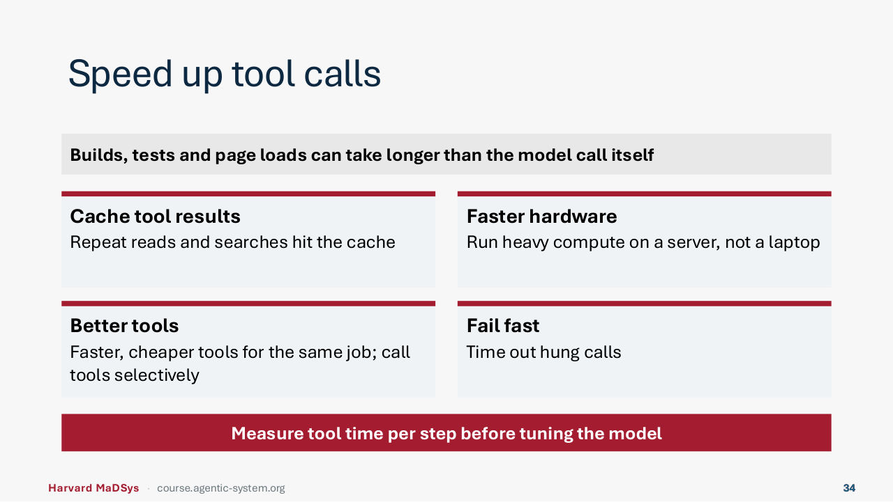
加速工具调用
构建、测试和页面加载可能比模型调用本身还慢。
- 缓存工具结果：重复的读取和搜索命中缓存
- 更快的硬件：把重计算放到服务器上，而不是笔记本
- 更好的工具：同样的工作用更快、更便宜的工具；有选择地调用工具
- 快速失败：给卡住的调用设超时
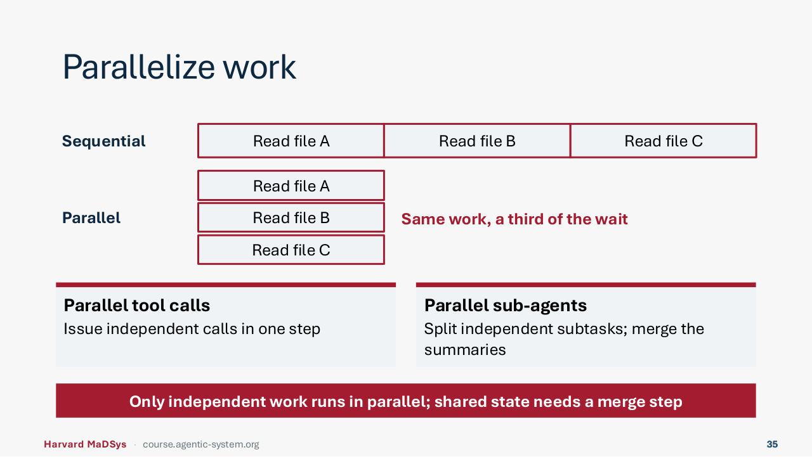
并行化工作
- 串行：读文件 A → 读文件 B → 读文件 C
- 并行：同时读文件 A、B、C——同样的工作，只等三分之一的时间
- 并行工具调用：在一步中发出相互独立的调用
- 并行子智能体：拆分独立的子任务；合并摘要
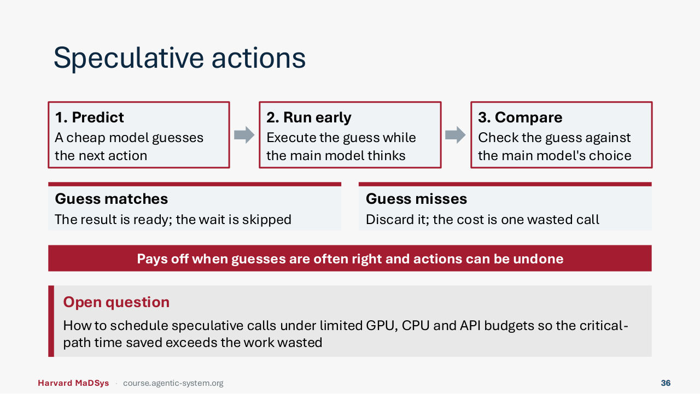
推测式动作（Speculative actions）
- 预测：一个便宜的模型猜测下一个动作
- 提前执行：在主模型思考时就执行这个猜测
- 比对：把猜测与主模型的选择进行对比
- 猜中：结果已经就绪，省掉了等待
- 猜错：丢弃，代价是一次白费的调用
开放问题：在有限的 GPU、CPU 和 API 预算下，如何调度推测调用，使关键路径上节省的时间超过浪费的工作？
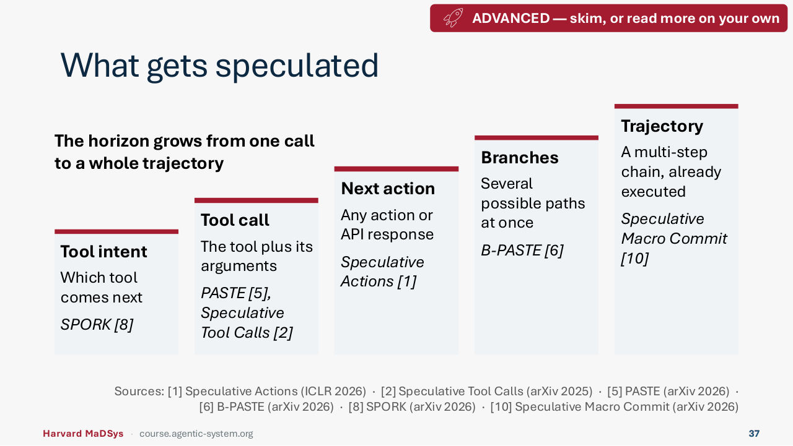
推测的对象是什么
范围从单次调用扩展到整条轨迹：
- 工具意图：下一个是哪个工具——SPORK [8]
- 工具调用：工具加上参数——PASTE [5]、Speculative Tool Calls [2]
- 下一个动作：任意动作或 API 响应——Speculative Actions [1]
- 分支：同时探索多条可能路径——B-PASTE [6]
- 轨迹：一条已经执行的多步链——Speculative Macro Commit [10]
（来源：[1] Speculative Actions (ICLR 2026) · [2] Speculative Tool Calls (arXiv 2025) · [5] PASTE (arXiv 2026) · [6] B-PASTE (arXiv 2026) · [8] SPORK (arXiv 2026) · [10] Speculative Macro Commit (arXiv 2026)）
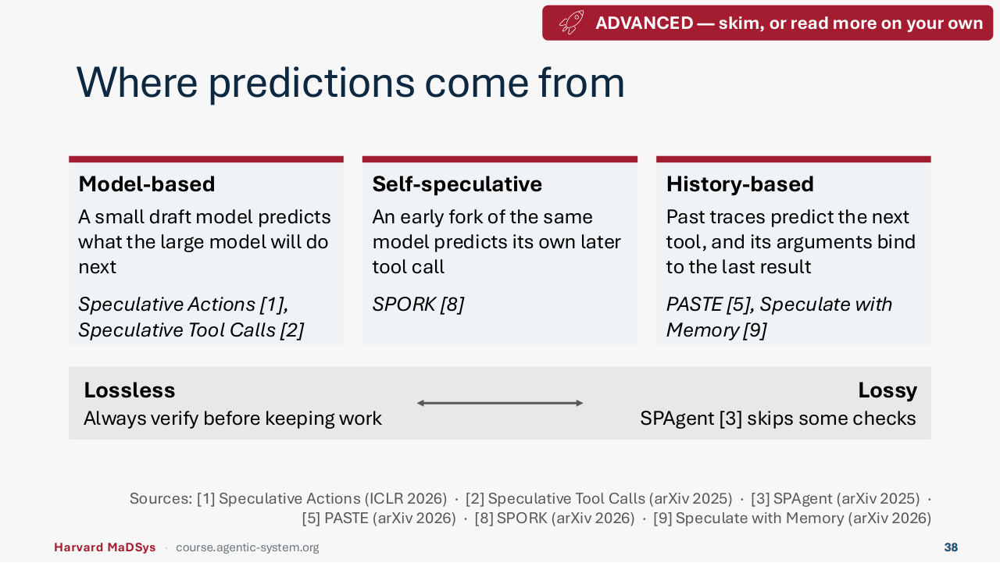
预测从哪里来
- 基于模型：一个小的草稿模型预测大模型下一步会做什么——Speculative Actions [1]、Speculative Tool Calls [2]
- 自推测：同一个模型的一个早期分叉，预测它自己之后的工具调用——SPORK [8]
- 基于历史：用过去的轨迹预测下一个工具，参数绑定到上一个结果——PASTE [5]、Speculate with Memory [9]
- 无损：保留工作之前总是先验证
- 有损：SPAgent [3] 跳过部分检查
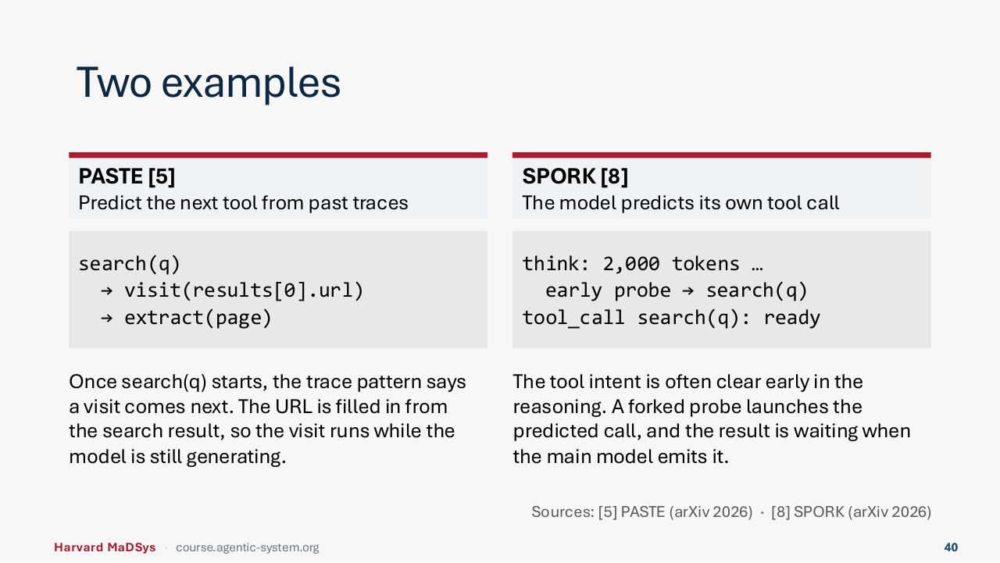
两个例子
PASTE [5]——从过去的轨迹预测下一个工具
search(q)
→ visit(results[0].url)
→ extract(page)一旦 search(q) 开始，轨迹模式表明接下来会 visit。URL 从搜索结果中填入，所以在模型还在生成时，visit 就已经在运行了。
SPORK [8]——模型预测它自己的工具调用
think: 2,000 tokens …
early probe → search(q)
tool_call search(q): ready工具意图往往在推理早期就已明确。一个分叉出来的探针提前发起预测的调用，等主模型输出该调用时，结果已经在等着了。
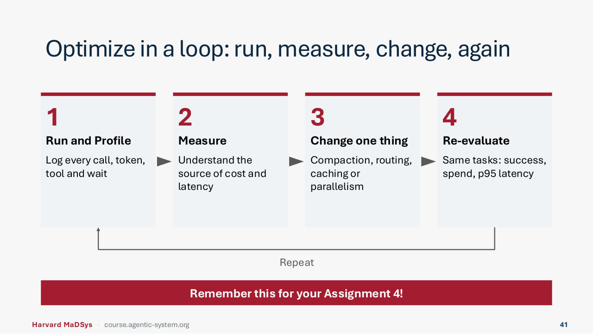
在循环中优化：运行、测量、修改，再来一遍
- 运行与剖析：记录每一次调用、token、工具和等待
- 测量：搞清楚成本和延迟的来源
- 只改一处：压缩、路由、缓存或并行
- 重新评测：同一批任务——成功率、花费、p95 延迟
- 重复
智能体架构
单体式 · 模块化 · 微内核
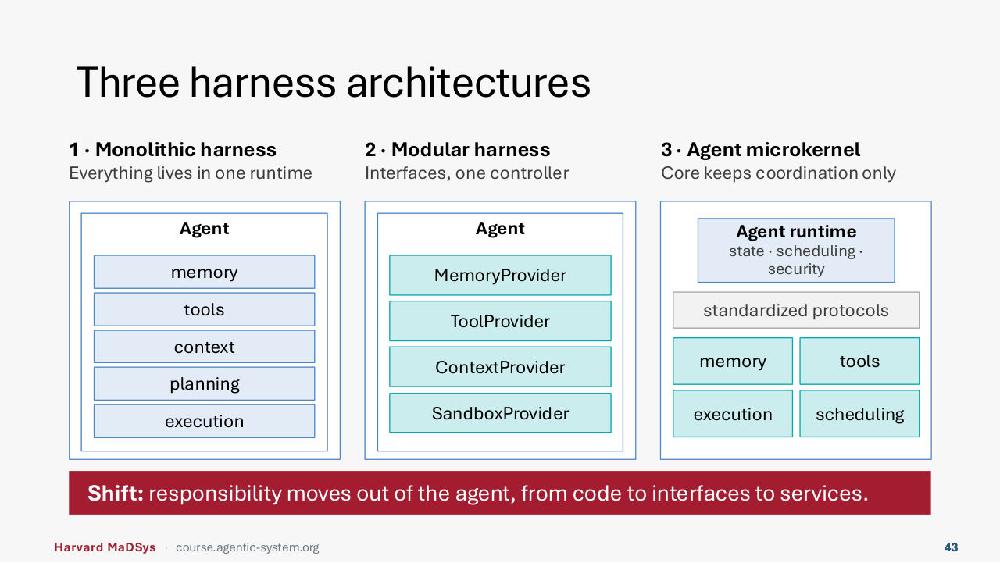
三种 Harness 架构
- 单体式 Harness：一切都在一个运行时里——智能体包含记忆、工具、上下文、规划、执行
- 模块化 Harness：接口化，一个控制器——智能体通过 MemoryProvider、ToolProvider、ContextProvider、SandboxProvider 访问组件
- 智能体微内核：内核只保留协调——智能体运行时（状态 · 调度 · 安全）通过标准化协议连接记忆、工具、执行、调度等服务
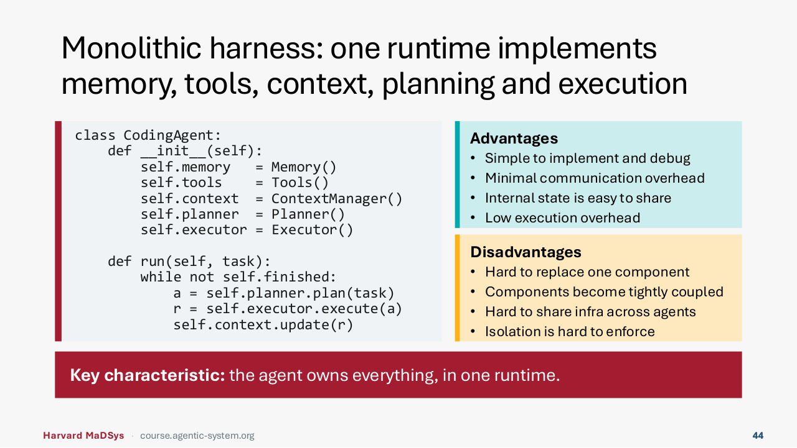
单体式 Harness：一个运行时实现记忆、工具、上下文、规划和执行
class CodingAgent:
def __init__(self):
self.memory = Memory()
self.tools = Tools()
self.context = ContextManager()
self.planner = Planner()
self.executor = Executor()
def run(self, task):
while not self.finished:
a = self.planner.plan(task)
r = self.executor.execute(a)
self.context.update(r)优点
- 实现和调试简单
- 通信开销最小
- 内部状态容易共享
- 执行开销低
缺点
- 难以替换某个组件
- 组件之间紧耦合
- 难以在多个智能体之间共享基础设施
- 难以强制隔离
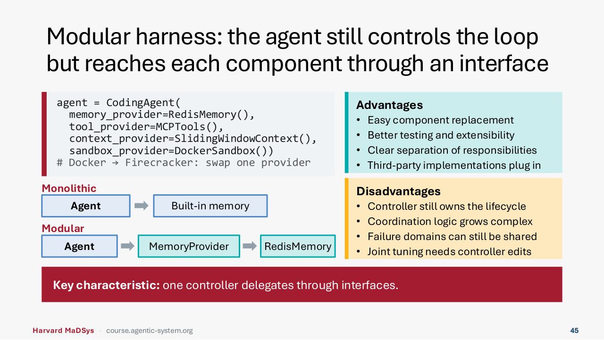
模块化 Harness：智能体仍控制循环，但通过接口访问各组件
agent = CodingAgent(
memory_provider=RedisMemory(),
tool_provider=MCPTools(),
context_provider=SlidingWindowContext(),
sandbox_provider=DockerSandbox())
# Docker → Firecracker: swap one provider（对比：单体式——智能体内置记忆；模块化——智能体 → MemoryProvider → RedisMemory）
优点
- 组件易于替换
- 更好的可测试性和可扩展性
- 职责划分清晰
- 第三方实现可以直接接入
缺点
- 控制器仍掌管生命周期
- 协调逻辑变得复杂
- 故障域仍可能共享
- 联合调优需要修改控制器
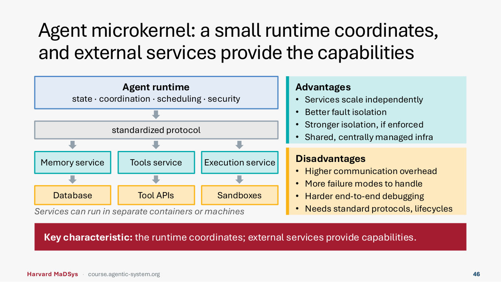
智能体微内核：一个小运行时负责协调，外部服务提供能力
智能体运行时（状态 · 协调 · 调度 · 安全）→ 标准化协议 → 记忆服务（数据库）/ 工具服务（工具 API）/ 执行服务（沙箱）
服务可以运行在不同的容器或机器上。
优点
- 服务可独立扩展
- 更好的故障隔离
- 更强的隔离（前提是强制执行）
- 共享的、集中管理的基础设施
缺点
- 通信开销更高
- 需要处理更多的故障模式
- 端到端调试更难
- 需要标准协议和生命周期
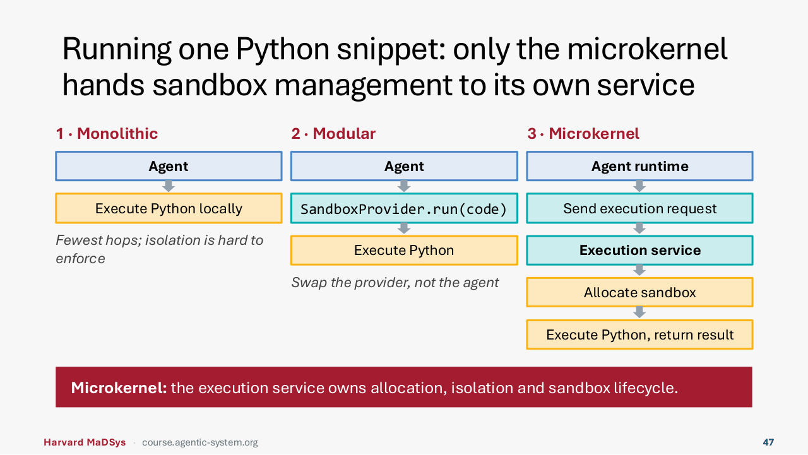
运行一段 Python 代码：只有微内核把沙箱管理交给独立服务
- 单体式：智能体在本地执行 Python——跳数最少；难以强制隔离
- 模块化：智能体 →
SandboxProvider.run(code)→ 执行 Python——换的是 provider，而不是智能体 - 微内核：智能体运行时 → 发送执行请求 → 执行服务 → 分配沙箱 → 执行 Python，返回结果
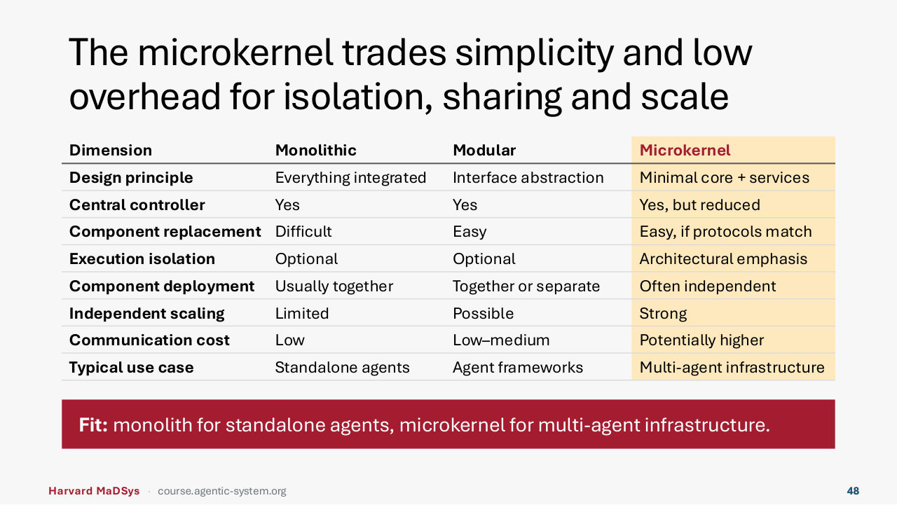
微内核用简单和低开销，换来隔离、共享和规模
| 维度 | 单体式 | 模块化 | 微内核 |
|---|---|---|---|
| 设计原则 | 一切集成 | 接口抽象 | 最小内核 + 服务 |
| 中央控制器 | 有 | 有 | 有，但被精简 |
| 组件替换 | 困难 | 容易 | 容易（协议匹配的话） |
| 执行隔离 | 可选 | 可选 | 架构层面的重点 |
| 组件部署 | 通常一起 | 一起或分开 | 往往独立 |
| 独立扩展 | 有限 | 可能 | 强 |
| 通信成本 | 低 | 低–中 | 可能更高 |
| 典型用例 | 独立智能体 | 智能体框架 | 多智能体基础设施 |
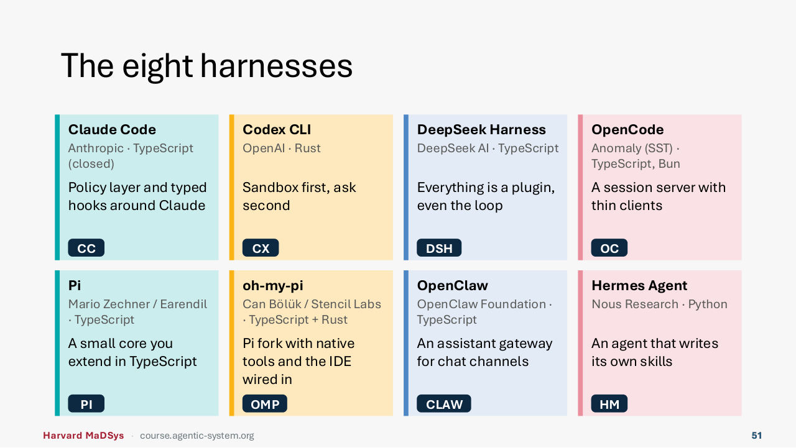
八个 Harness
- CC · Claude Code（Anthropic · TypeScript，闭源）：围绕 Claude 的策略层与类型化 Hook
- CX · Codex CLI（OpenAI · Rust）：沙箱优先，询问其次
- DSH · DeepSeek Harness（DeepSeek AI · TypeScript）：一切皆插件，连循环也是
- OC · OpenCode（Anomaly (SST) · TypeScript, Bun）：一个会话服务器 + 若干瘦客户端
- PI · Pi（Mario Zechner / Earendil · TypeScript）：一个用 TypeScript 扩展的小内核
- OMP · oh-my-pi（Can Bölük / Stencil Labs · TypeScript + Rust）：Pi 的分支，集成了原生工具和 IDE
- CLAW · OpenClaw（OpenClaw Foundation · TypeScript）：面向聊天渠道的助手网关
- HM · Hermes Agent（Nous Research · Python）：会自己编写 Skill 的智能体
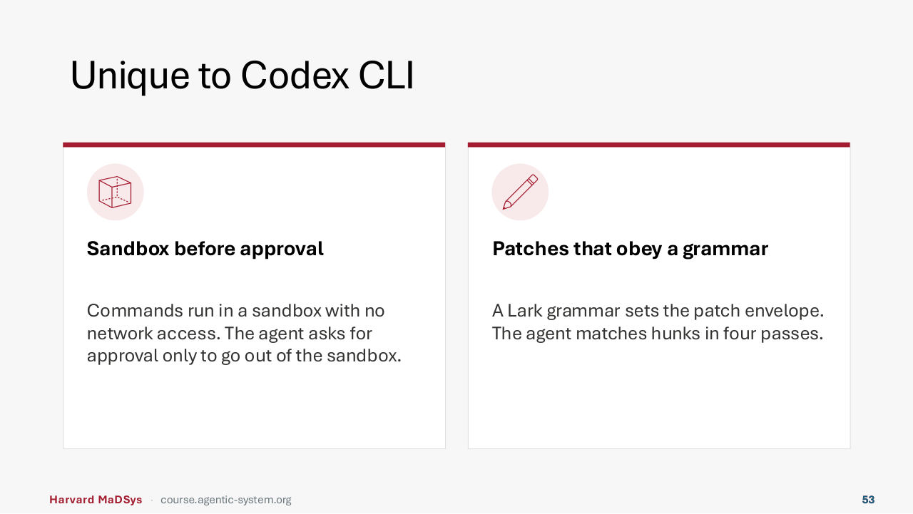
Codex CLI 的独特之处
- 先沙箱，后审批：命令在没有网络访问的沙箱中运行。只有当需要走出沙箱时，智能体才请求批准。
- 遵循语法的补丁：用一个 Lark 语法定义补丁的外层格式。智能体分四轮匹配 hunk。
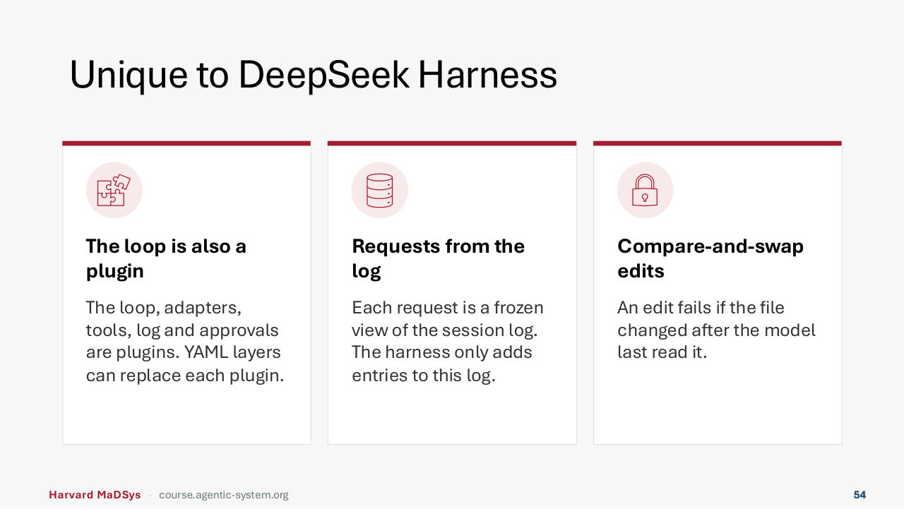
DeepSeek Harness 的独特之处
- 循环本身也是插件：循环、适配器、工具、日志和审批都是插件。可以用 YAML 分层替换任意插件。
- 从日志生成请求：每个请求都是会话日志的一个冻结视图。Harness 只向这个日志追加条目。
- 比较并交换（CAS）式编辑：如果文件在模型上次读取之后被改动过，编辑就会失败。
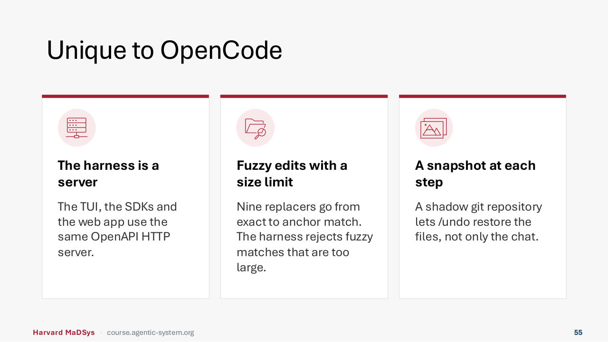
OpenCode 的独特之处
- Harness 是一个服务器：TUI、SDK 和 Web 应用都使用同一个 OpenAPI HTTP 服务器。
- 带大小限制的模糊编辑：九种替换器，从精确匹配到锚点匹配逐级放宽。匹配范围过大的模糊匹配会被 Harness 拒绝。
- 每一步都有快照：一个影子 git 仓库让 /undo 能恢复文件，而不只是聊天记录。
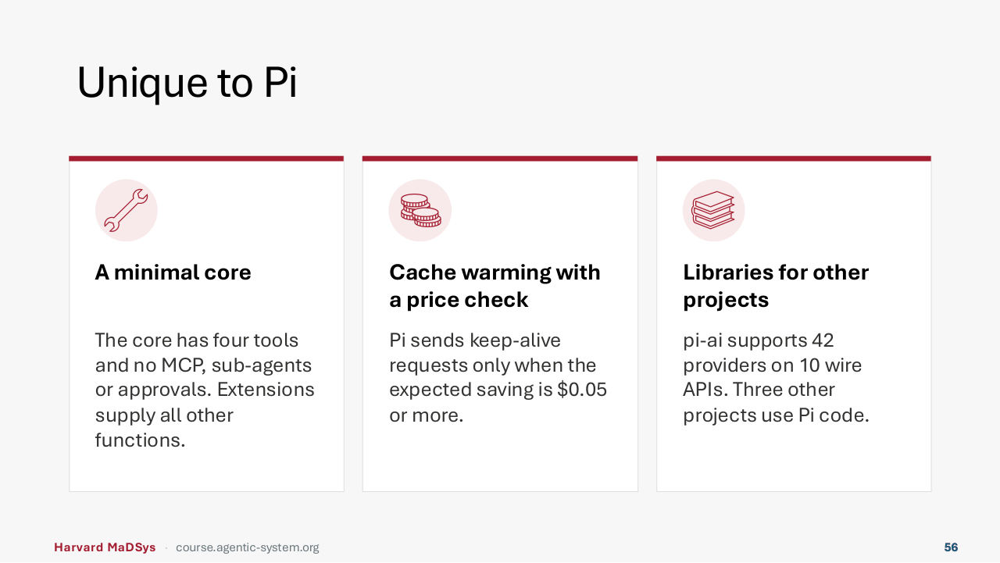
Pi 的独特之处
- 极简内核：内核只有四个工具，没有 MCP、子智能体或审批。其余所有功能都由扩展提供。
- 带价格检查的缓存预热：只有在预期节省达到 $0.05 或以上时，Pi 才发送保活请求。
- 可供其他项目使用的库：pi-ai 支持 10 种 wire API 上的 42 个提供商。另有三个项目使用了 Pi 的代码。
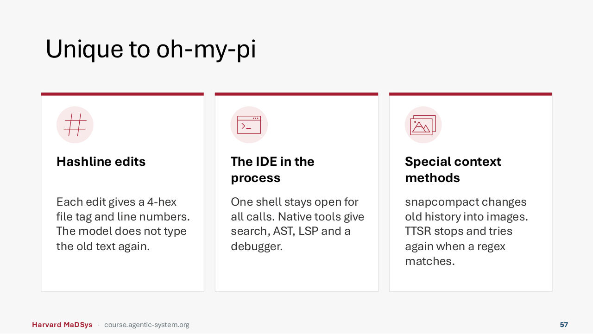
oh-my-pi 的独特之处
- Hashline 编辑：每次编辑给出一个 4 位十六进制的文件标签和行号，模型无需再把旧文本敲一遍。
- 进程内的 IDE：所有调用共用一个常开的 shell。原生工具提供搜索、AST、LSP 和调试器。
- 特殊的上下文方法：snapcompact 把旧历史转换成图片；TTSR 在正则匹配时停止并重试。
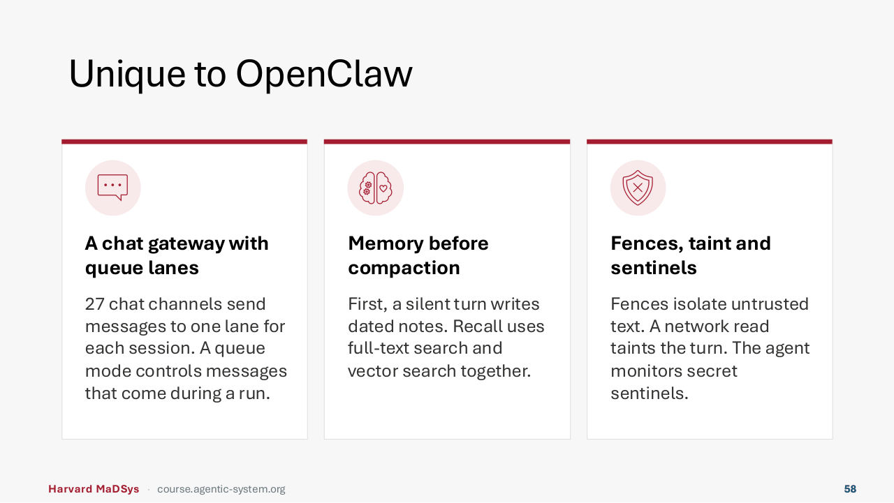
OpenClaw 的独特之处
- 带队列通道的聊天网关：27 个聊天渠道把消息发送到每个会话的一条通道中。队列模式控制运行期间到达的消息如何处理。
- 压缩前先记忆：先用一个静默轮次写下带日期的笔记。回忆时同时使用全文搜索和向量搜索。
- 围栏、污点与哨兵：围栏隔离不可信文本；一次网络读取会让该轮次被标记为“污染”；智能体监控机密哨兵（secret sentinels）。
Hermes Agent 的独特之处
- 会学习的分叉：一个后台分叉检查每个被提醒的轮次，然后编辑记忆和 Skill。
- 最早的压缩：在窗口用到 50% 时就开始压缩——八个 Harness 中最早的。
- 执行前先保存：在产生任何副作用之前，智能体先把工具调用记录写入会话数据库。
下节课
- 智能体安全与防护
- 自我演进的 Harness